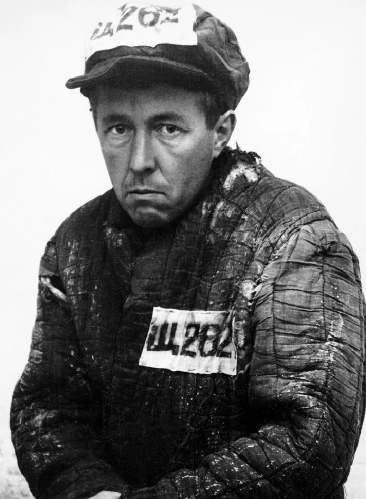

"Camp prose" refers to a specific literary genre that documents experiences within concentration or labor camps.
1. The Literary Genre (Gulag/Holocaust Literature)
In a historical and academic context, camp prose is a thematic direction in literature—particularly Russian and Eastern European—that creates an artistic image of life in labor or concentration camps.
Russian Camp Prose: Emerging strongly in the late 1950s, this genre includes works by authors like Aleksandr Solzhenitsyn (One Day in the Life of Ivan Denisovich) and Varlam Shalamov (Kolyma Tales). These works detail the systemic brutality and daily survival within the Soviet Gulag system.

Kazakh Camp Prose: A subset focusing on the specific history of camps in Kazakhstan, exploring the psychological and physical impacts of imprisonment on that population.
Themes:
Common elements include dehumanization,
the struggle for moral integrity, and
the "motive field" of captivity and forced labor.